Tutorial 1: Active inference from scratch

Author: Conor Heins
This tutorial guides you through the construction of an active inference agent “from scratch” in a simple grid-world environment. This tutorial is designed to walk you through the various mathematical operations required for running active inference in discrete state spaces, as well as introduce you to the way discrete probability distributions are represented in pymdp (through the use of numpy vectors and matrices). We also show you how to compute the expected free energy in terms of risk and ambiguity, and how to use it to plan sequences of actions.
By the end of this tutorial, you should be able to write simple active inference models from scratch using the main components of any POMDP generative model: the A, B, C, and D arrays, as well as be able to write the active inference loop for an agent engaged in a perception-action exchange with its environment.
Note: When running this notebook in Google Colab, you may have to run !pip install inferactively-pymdp at the top of the notebook, before you can import pymdp. That cell is left commented out below, in case you are running this notebook from Google Colab.
# ! pip install inferactively-pymdp
Imports
import numpy as np
import matplotlib.pyplot as plt
import seaborn as sns
Define some auxiliary functions
Here are some plotting functions that will come in handy throughout the tutorial.
def plot_likelihood(matrix, xlabels = list(range(9)), ylabels = list(range(9)), title_str = "Likelihood distribution (A)"):
"""
Plots a 2-D likelihood matrix as a heatmap
"""
if not np.isclose(matrix.sum(axis=0), 1.0).all():
raise ValueError("Distribution not column-normalized! Please normalize (ensure matrix.sum(axis=0) == 1.0 for all columns)")
plt.figure(figsize = (6,6))
sns.heatmap(matrix, xticklabels = xlabels, yticklabels = ylabels, cmap = 'gray', cbar = False, vmin = 0.0, vmax = 1.0)
plt.title(title_str)
plt.show()
def plot_grid(grid_locations, num_x = 3, num_y = 3 ):
"""
Plots the spatial coordinates of GridWorld as a heatmap, with each (X, Y) coordinate
labeled with its linear index (its `state id`)
"""
grid_heatmap = np.zeros((num_x, num_y))
for linear_idx, location in enumerate(grid_locations):
y, x = location
grid_heatmap[y, x] = linear_idx
sns.set(font_scale=1.5)
sns.heatmap(grid_heatmap, annot=True, cbar = False, fmt='.0f', cmap='crest')
def plot_point_on_grid(state_vector, grid_locations):
"""
Plots the current location of the agent on the grid world
"""
state_index = np.where(state_vector)[0][0]
y, x = grid_locations[state_index]
grid_heatmap = np.zeros((3,3))
grid_heatmap[y,x] = 1.0
sns.heatmap(grid_heatmap, cbar = False, fmt='.0f')
def plot_beliefs(belief_dist, title_str=""):
"""
Plot a categorical distribution or belief distribution, stored in the 1-D numpy vector `belief_dist`
"""
if not np.isclose(belief_dist.sum(), 1.0):
raise ValueError("Distribution not normalized! Please normalize")
plt.grid(zorder=0)
plt.bar(range(belief_dist.shape[0]), belief_dist, color='r', zorder=3)
plt.xticks(range(belief_dist.shape[0]))
plt.title(title_str)
plt.show()
The Basics: categorical distributions
Let’s start by creating a simple categorical distribution $P(x)$. We will represent this distribution numerically with a 1-D numpy array (i.e. a numpy.ndarray where ndim == 1). The discrete entries of this vector can be thought of as the probabilities of seeing each of the $K$ alternative outcomes (the support of the distribution), if we were to sample once from the distribution. We can write the distribution as a vector of probabilities, follows:
$$ P(x) = \begin{bmatrix} P(x = 0) \ P(x = 1)\ \vdots \ P(x = K) \end{bmatrix} $$
We can use numpy and the norm_dist function from utils library of pymdp to quickly create a random categorical distribution.
from pymdp import utils
my_categorical = np.random.rand(3)
# my_categorical = np.array([0.5, 0.3, 0.8]) # could also just write in your own numbers
my_categorical = utils.norm_dist(my_categorical) # normalizes the distribution so it integrates to 1.0
print(my_categorical.reshape(-1,1)) # we reshape it to display it like a column vector
print(f'Integral of the distribution: {round(my_categorical.sum(), 2)}')
[[0.43188359]
[0.38896939]
[0.17914701]]
Integral of the distribution: 1.0
We can sample a discrete outcome from this distribution using the sample() function from the utils module
sampled_outcome = utils.sample(my_categorical)
print(f'Sampled outcome: {sampled_outcome}')
---------------------------------------------------------------------------
AttributeError Traceback (most recent call last)
Cell In[6], line 1
----> 1 sampled_outcome = utils.sample(my_categorical)
2 print(f'Sampled outcome: {sampled_outcome}')
AttributeError: module 'pymdp.utils' has no attribute 'sample'
Now plot the beliefs using our plot_beliefs() function that we defined in the beginning.
plot_beliefs(my_categorical, title_str = "A random (unconditional) Categorical distribution")
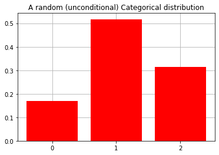
Now let’s move onto conditional categorical distributions or likelihoods, i.e. how we represent the distribution of one discrete random variable X, conditioned on the settings of another discrete random variable Y.
We would write these mathematically as:
$$ \begin{align} P(X | Y) \end{align} $$
And can represent them using 2-D numpy.ndarrays i.e. matrices
# initialize it with random numbers
p_x_given_y = np.random.rand(3, 4)
print(p_x_given_y.round(3))
[[0.089 0.739 0.145 0.399]
[0.772 0.201 0.026 0.578]
[0.181 0.253 0.788 0.844]]
# normalize it
p_x_given_y = utils.norm_dist(p_x_given_y)
print(p_x_given_y.round(3))
[[0.086 0.619 0.151 0.219]
[0.741 0.168 0.027 0.318]
[0.174 0.212 0.821 0.463]]
Now print the first column (i.e. $P(X | Y = 0)$) and show that it’s a proper categorical distribution
print(p_x_given_y[:,0].reshape(-1,1))
print(f'Integral of P(X|Y=0): {p_x_given_y[:,0].sum()}')
[[0.08555937]
[0.74093812]
[0.1735025 ]]
Integral of P(X|Y=0): 0.9999999999999999
So column i of the matrix p_x_given_y represents the conditional probability of $X$, given the i-th level of the random variable $Y$, i.e. $P(X | Y = i)$
Next: taking expectations of random variables using matrix-vector products
""" Create a P(Y) and P(X|Y) using the same numbers from the slides """
p_y = np.array([0.75, 0.25]) # this is already normalized - you don't need to `utils.norm_dist()` it!
# the columns here are already normalized - you don't need to `utils.norm_dist()` it!
p_x_given_y = np.array([[0.6, 0.5],
[0.15, 0.41],
[0.25, 0.09]])
print(p_y.round(3).reshape(-1,1))
print(p_x_given_y.round(3))
[[0.75]
[0.25]]
[[0.6 0.5 ]
[0.15 0.41]
[0.25 0.09]]
Calculate expected value of $X$, given our current belief about $Y$, i.e. $P(Y)$ using a simple matrix-vector product, of the form $\mathbf{A}\mathbf{x}$.
""" Calculate the expectation using numpy's dot product functionality """
# first version of the dot product (using the method of a numpy array)
E_x_wrt_y = p_x_given_y.dot(p_y)
# second version of the dot product (using the function np.dot with two arguments)
# E_x_wrt_y = np.dot(p_x_given_y, p_y)
Now print it and verify the result is a proper categorical distribution (integrates to 1.0)
print(E_x_wrt_y)
print(f'Integral: {E_x_wrt_y.sum().round(3)}')
[0.575 0.215 0.21 ]
Integral: 1.0
A simple environment: Grid-world
Now that we understand categorical distributions and how to take conditional expectations of random variables, with categorical conditional and prior distributions, let’s move onto a worked example of Active Inference, so-called ‘Grid-World’.
Before we write down the generative model $P(o,s)$ of an active inference agent who will navigate Grid-World, let’s start by establishing what exactly this environment is and how we’re going to represent it mathematically.
import itertools
""" Create the grid locations in the form of a list of (Y, X) tuples -- HINT: use itertools """
grid_locations = list(itertools.product(range(3), repeat = 2))
print(grid_locations)
[(0, 0), (0, 1), (0, 2), (1, 0), (1, 1), (1, 2), (2, 0), (2, 1), (2, 2)]
plot_grid(grid_locations)
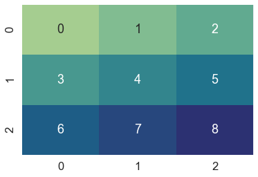
Building the generative model: $\mathbf{A}$, $\mathbf{B}$, $\mathbf{C}$, and $\mathbf{D}$
1. The A matrix or $P(o\mid s)$.
The generative model’s “prior beliefs” about how hidden states relate to observations
""" Create variables for the storing the dimensionalities of the hidden states and the observations """
n_states = len(grid_locations)
n_observations = len(grid_locations)
print(f'Dimensionality of hidden states: {n_states}')
print(f'Dimensionality of observations: {n_observations}')
Dimensionality of hidden states: 9
Dimensionality of observations: 9
""" Create the A matrix """
A = np.zeros( (n_states, n_observations) )
""" Create an umambiguous or 'noise-less' mapping between hidden states and observations """
np.fill_diagonal(A, 1.0)
# alternative:
# A = np.eye(n_observations, n_states)
Likelihood matrices show relationships between indices of the state space, which are indexed linearly. Remember the (Y, X) coordinates of the grid world don’t necessarily neatly map onto to the locations in the matrix here, which has ‘unwrapped’ the Grid World’s (Y, X) locations into columns/rows.
plot_likelihood(A, title_str = "A matrix or $P(o|s)$")
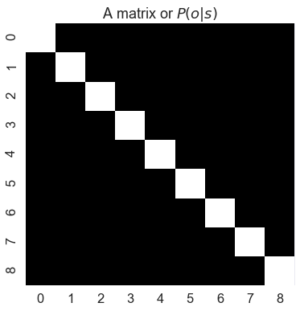
How could we introduce uncertainty into this A matrix? I.e. how do we introduce ambiguity or uncertainty into the agent’s model of the world?
""" Remind yourself of the mapping between linear indices (0 through 8) and grid locations (Y, X) """
plot_grid(grid_locations)
A_noisy = A.copy()
# this line says: the probability of seeing yourself in location 0, given you're in location 0, is 1/3, AKA P(o == 0 | s == 0) = 0.3333....
A_noisy[0,0] = 1 / 3.0 # corresponds to location (0,0)
# this line says: the probability of seeing yourself in location 1, given you're in location 0, is 1/3, AKA P(o == 1 | s == 0) = 0.3333....
A_noisy[1,0] = 1 / 3.0 # corresponds to one step to the right from (0, 1)
# this line says: the probability of seeing yourself in location 3, given you're in location 0, is 1/3, AKA P(o == 3 | s == 0) = 0.3333....
A_noisy[3,0] = 1 / 3.0 # corresponds to one step down from (1, 0)
plot_likelihood(A_noisy, title_str = 'modified A matrix where location (0,0) is "blurry"')
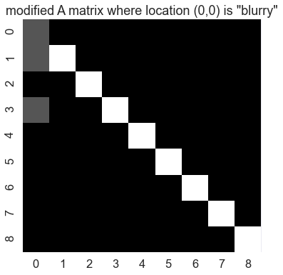
""" Let's make ake one grid location "ambiguous" in the sense that it could be easily confused with neighbouring locations """
my_A_noisy = A_noisy.copy()
# locations 3 and 7 are the nearest neighbours to location 6
my_A_noisy[3,6] = 1.0 / 3.0
my_A_noisy[6,6] = 1.0 / 3.0
my_A_noisy[7,6] = 1.0 / 3.0
# Alternatively: you could have the probability spread among locations 3, 4, 6, and 7. This is basically saying, that whole lower-left corner of grid-world is blurry, if you're in location 6
# Remember to make sure the A matrix is column normalized. So if you do it this way, with the probabilities spread among 4 perceived locations, then you'll have to make sure the probabilities sum to 1.0
# my_A_noisy[3,6] = 1.0 / 4.0
# my_A_noisy[4,6] = 1.0 / 4.0
# my_A_noisy[6,6] = 1.0 / 4.0
# my_A_noisy[7,6] = 1.0 / 4.0
Now plot the new A matrix, that now has two “blurry” locations
plot_likelihood(my_A_noisy, title_str = "Noisy A matrix now with TWO ambiguous locations")
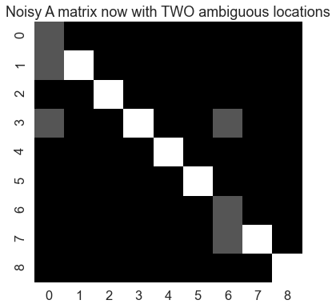
2. The B matrix or $P(s_{t}\mid s_{t-1}, u_{t-1})$.
The generative model’s “prior beliefs” about (controllable) transitions between hidden states over time. Namely, how do hidden states at time $t$ result from hidden states at some previous time $t-1$. These transition dynamics are further conditioned on some past action $u_t$.
actions = ["UP", "DOWN", "LEFT", "RIGHT", "STAY"]
def create_B_matrix():
B = np.zeros( (len(grid_locations), len(grid_locations), len(actions)) )
for action_id, action_label in enumerate(actions):
for curr_state, grid_location in enumerate(grid_locations):
y, x = grid_location
if action_label == "UP":
next_y = y - 1 if y > 0 else y
next_x = x
elif action_label == "DOWN":
next_y = y + 1 if y < 2 else y
next_x = x
elif action_label == "LEFT":
next_x = x - 1 if x > 0 else x
next_y = y
elif action_label == "RIGHT":
next_x = x + 1 if x < 2 else x
next_y = y
elif action_label == "STAY":
next_x = x
next_y = y
new_location = (next_y, next_x)
next_state = grid_locations.index(new_location)
B[next_state, curr_state, action_id] = 1.0
return B
B = create_B_matrix()
Let’s now explore what it looks to “take” an action, using matrix-vector product of an action-conditioned “slice” of the $\mathbf{B}$ array and a previous state vector
""" Define a starting location"""
starting_location = (1,0)
"""get the linear index of the state"""
state_index = grid_locations.index(starting_location)
""" and create a state vector out of it """
starting_state = utils.onehot(state_index, n_states)
plot_point_on_grid(starting_state, grid_locations)
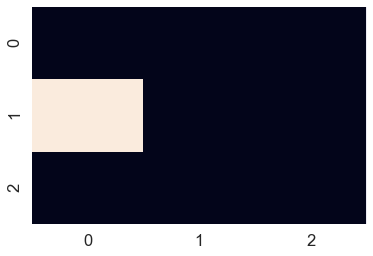
plot_beliefs(starting_state, "Categorical distribution over the starting state")
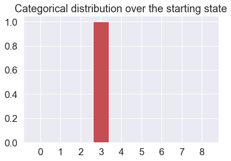
Now let’s imagine we’re moving “RIGHT” - write the conditional expectation, that will create the state vector corresponding to the new state after taking a step to the right.
""" Redefine the action here, just for reference """
actions = ["UP", "DOWN", "LEFT", "RIGHT", "STAY"]
""" Generate the next state vector, given the starting state and the B matrix"""
right_action_idx = actions.index("RIGHT")
next_state = B[:,:, right_action_idx].dot(starting_state) # input the indices to the B matrix
""" Plot the next state, after taking the action """
plot_point_on_grid(next_state, grid_locations)
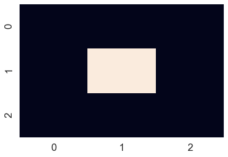
Now let’s imagine we’re moving “DOWN” from where we just landed - write the conditional expectation, that will create the state vector corresponding to the new state after taking a step down.
""" Generate the next state vector, given the previous state and the B matrix"""
prev_state = next_state.copy()
down_action_index = actions.index("DOWN")
next_state = B[:,:,down_action_index].dot(prev_state)
""" Plot the new state vector, after making the movement """
plot_point_on_grid(next_state, grid_locations)
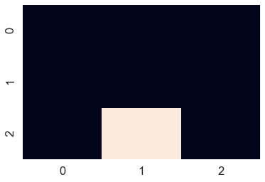
3. The prior over observations: the $\mathbf{C}$ vector or $\tilde{P}(o)$
The (biased) generative model’s prior preference for particular observations, encoded in terms of probabilities.
""" Create an empty vector to store the preferences over observations """
C = np.zeros(n_observations)
""" Choose an observation index to be the 'desired' rewarding index, and fill out the C vector accordingly """
desired_location = (2,2) # choose a desired location
desired_location_index = grid_locations.index(desired_location) # get the linear index of the grid location, in terms of 0 through 8
C[desired_location_index] = 1.0 # set the preference for that location to be 100%, i.e. 1.0
""" Let's look at the prior preference distribution """
plot_beliefs(C, title_str = "Preferences over observations")
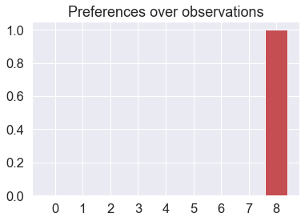
Action Selection and the Expected Free Energy
Now we’ll write functions to compute the expected states $Q(s_{t+1}|u_t)$, expected observations $Q(o_{t+1}|u_t)$, the entropy of $P(o|s)$: $\mathbf{H}\left[\mathbf{A}\right]$, and the KL divergence between the expected observations and the prior preferences $\mathbf{C}$.
""" define component functions for computing expected free energy """
def get_expected_states(B, qs_current, action):
""" Compute the expected states one step into the future, given a particular action """
qs_u = B[:,:,action].dot(qs_current)
return qs_u
def get_expected_observations(A, qs_u):
""" Compute the expected observations one step into the future, given a particular action """
qo_u = A.dot(qs_u)
return qo_u
def entropy(A):
""" Compute the entropy of a set of conditional distributions, i.e. one entropy value per column """
H_A = - (A * log_stable(A)).sum(axis=0)
return H_A
def kl_divergence(qo_u, C):
""" Compute the Kullback-Leibler divergence between two 1-D categorical distributions"""
return (log_stable(qo_u) - log_stable(C)).dot(qo_u)
Now let’s imagine we’re in some starting state, like (1,1) N.B. This is the generative process we’re talking about – i.e. the true state of the world
""" Get state index, create state vector for (1,1) """
state_idx = grid_locations.index((1,1))
state_vector = utils.onehot(state_idx, n_states)
plot_point_on_grid(state_vector, grid_locations)
And let’s furthermore assume we start with the (accurate) belief about our location, that we are in location (1,1). So let’s just make our current $Q(s_t)$ equal to the true state vector. You could think of this as if we just did one ‘step’ of inference using our current observation along with precise A/B matrices.
""" Make qs_current identical to the true starting state """
qs_current = state_vector.copy()
plot_beliefs(qs_current, title_str ="Where do we believe we are?")
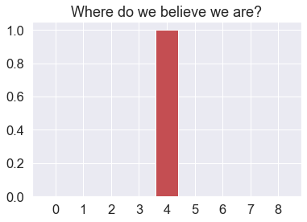
And we prefer to be in state (1,2). So we express that as high probability over the corresponding entry of the $\mathbf{C}$ vector – that happens to be index 5.
plot_grid(grid_locations)
""" Create a preference to be in (1,2) """
desired_idx = grid_locations.index((1,2))
C = utils.onehot(desired_idx, n_observations)
plot_beliefs(C, title_str = "Preferences")
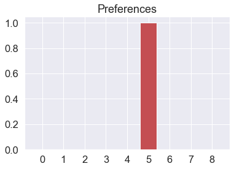
Now to keep things simple, let’s evaluate the expected free energies $\mathbf{G}$ of just two actions that we could take from our current position – either moving LEFT or moving RIGHT. Let’s remind ourselves of what action indices those are
left_idx = actions.index("LEFT")
right_idx = actions.index("RIGHT")
print(f'Action index of moving left: {left_idx}')
print(f'Action index of moving right: {right_idx}')
Action index of moving left: 2
Action index of moving right: 3
And now let’s use the functions we’ve just defined, in combination with our A, B, C arrays and our current posterior qs_current, to compute the expected free energies for the two actions
""" Compute the expected free energies for moving left vs. moving right """
G = np.zeros(2) # store the expected free energies for each action in here
"""
Compute G for MOVE LEFT here
"""
qs_u_left = get_expected_states(B, qs_current, left_idx)
# alternative
# qs_u_left = B[:,:,left_idx].dot(qs_current)
H_A = entropy(A)
qo_u_left = get_expected_observations(A, qs_u_left)
# alternative
# qo_u_left = A.dot(qs_u_left)
predicted_uncertainty_left = H_A.dot(qs_u_left)
predicted_divergence_left = kl_divergence(qo_u_left, C)
G[0] = predicted_uncertainty_left + predicted_divergence_left
"""
Compute G for MOVE RIGHT here
"""
qs_u_right = get_expected_states(B, qs_current, right_idx)
# alternative
# qs_u_right = B[:,:,right_idx].dot(qs_current)
H_A = entropy(A)
qo_u_right = get_expected_observations(A, qs_u_right)
# alternative
# qo_u_right = A.dot(qs_u_right)
predicted_uncertainty_right = H_A.dot(qs_u_right)
predicted_divergence_right = kl_divergence(qo_u_right, C)
G[1] = predicted_uncertainty_right + predicted_divergence_right
""" Now let's print the expected free energies for the two actions, that we just calculated """
print(f'Expected free energy of moving left: {G[0]}\n')
print(f'Expected free energy of moving right: {G[1]}\n')
Expected free energy of moving left: 36.841361487904734
Expected free energy of moving right: 0.0
Now let’s use formula for the posterior over actions, i.e.
$$ \begin{align} Q(u_t) = \sigma(-\mathbf{G}) \end{align} $$
to compute the probabilities of each action
Q_u = softmax(-G)
""" and print the probability of each action """
print(f'Probability of moving left: {Q_u[0]}')
print(f'Probability of moving right: {Q_u[1]}')
Probability of moving left: 9.999999999999965e-17
Probability of moving right: 1.0
For usefulness later on, let’s wrap the expected free energy calculations into a function
def calculate_G(A, B, C, qs_current, actions):
G = np.zeros(len(actions)) # vector of expected free energies, one per action
H_A = entropy(A) # entropy of the observation model, P(o|s)
for action_i in range(len(actions)):
qs_u = get_expected_states(B, qs_current, action_i) # expected states, under the action we're currently looping over
qo_u = get_expected_observations(A, qs_u) # expected observations, under the action we're currently looping over
pred_uncertainty = H_A.dot(qs_u) # predicted uncertainty, i.e. expected entropy of the A matrix
pred_div = kl_divergence(qo_u, C) # predicted divergence
G[action_i] = pred_uncertainty + pred_div # sum them together to get expected free energy
return G
Complete Recipe for Active Inference
Sample an observation $o_t$ from the current state of the environment
Perform inference over hidden states i.e., optimize $q(s)$ through free-energy minimization
Calculate expected free energy of actions $\mathbf{G}$
Sample action from the posterior over actions $Q(u_t) \sim \sigma(-\mathbf{G})$.
Use the sampled action $a_t$ to perturb the generative process and go back to step 1.
Let’s start by creating a class that will represent the Grid World environment (i.e., generative process) that our active inference agent will navigate within. Note that we don’t need to specify the generative process in terms of A and B matrices - the generative process will be as arbitrary and complex as the environment is. The A and B matrices are just the agent’s representation of the world and the task, which in this case happen to capture the Markovian, noiseless dynamics of the world perfectly.
class GridWorldEnv():
def __init__(self,starting_state = (0,0)):
self.init_state = starting_state
self.current_state = self.init_state
print(f'Starting state is {starting_state}')
def step(self,action_label):
(Y, X) = self.current_state
if action_label == "UP":
Y_new = Y - 1 if Y > 0 else Y
X_new = X
elif action_label == "DOWN":
Y_new = Y + 1 if Y < 2 else Y
X_new = X
elif action_label == "LEFT":
Y_new = Y
X_new = X - 1 if X > 0 else X
elif action_label == "RIGHT":
Y_new = Y
X_new = X +1 if X < 2 else X
elif action_label == "STAY":
Y_new, X_new = Y, X
self.current_state = (Y_new, X_new) # store the new grid location
obs = self.current_state # agent always directly observes the grid location they're in
return obs
def reset(self):
self.current_state = self.init_state
print(f'Re-initialized location to {self.init_state}')
obs = self.current_state
print(f'..and sampled observation {obs}')
return obs
env = GridWorldEnv()
Starting state is (0, 0)
Now equipped with an environment and a generative model (our A, B, C, and D), we can code up the entire active inference loop
To have everything in one place, let’s re-create the whole generative model
""" Fill out the components of the generative model """
A = np.eye(n_observations, n_states)
B = create_B_matrix()
C = utils.onehot(grid_locations.index( (2, 2) ), n_observations) # make the agent prefer location (2,2) (lower right corner of grid world)
D = utils.onehot(grid_locations.index( (1,2) ), n_states) # start the agent with the prior belief that it starts in location (1,2)
actions = ["UP", "DOWN", "LEFT", "RIGHT", "STAY"]
Now let’s initialize the environment with starting state (1,2), so that the agent has accurate beliefs about where it’s starting.
env = GridWorldEnv(starting_state = (1,2))
Starting state is (1, 2)
Let’s write a function that runs the whole active inference loop, and then run it for T = 5 timesteps.
""" Write a function that, when called, runs the entire active inference loop for a desired number of timesteps"""
def run_active_inference_loop(A, B, C, D, actions, env, T = 5):
""" Initialize the prior that will be passed in during inference to be the same as `D` """
prior = D.copy() # initial prior should be the D vector
""" Initialize the observation that will be passed in during inference - hint use env.reset()"""
obs = env.reset() # initialize the `obs` variable to be the first observation you sample from the environment, before `step`-ing it.
for t in range(T):
print(f'Time {t}: Agent observes itself in location: {obs}')
# convert the observation into the agent's observational state space (in terms of 0 through 8)
obs_idx = grid_locations.index(obs)
# perform inference over hidden states
qs_current = infer_states(obs_idx, A, prior)
plot_beliefs(qs_current, title_str = f"Beliefs about location at time {t}")
# calculate expected free energy of actions
G = calculate_G(A, B, C, qs_current, actions)
# compute action posterior
Q_u = softmax(-G)
# sample action from probability distribution over actions
chosen_action = utils.sample(Q_u)
# compute prior for next timestep of inference
prior = B[:,:,chosen_action].dot(qs_current)
# update generative process
action_label = actions[chosen_action]
obs = env.step(action_label)
return qs_current
""" Run the function we just wrote, for T = 5 timesteps """
qs = run_active_inference_loop(A, B, C, D, actions, env, T = 5)
Re-initialized location to (1, 2)
..and sampled observation (1, 2)
Time 0: Agent observes itself in location: (1, 2)
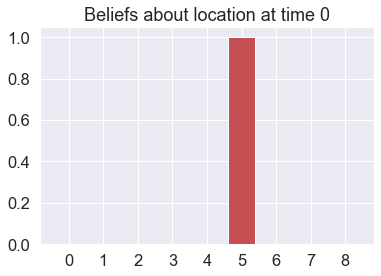
Time 1: Agent observes itself in location: (2, 2)
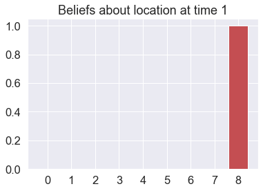
Time 2: Agent observes itself in location: (2, 2)
Time 3: Agent observes itself in location: (2, 2)
Time 4: Agent observes itself in location: (2, 2)
Planning
But there’s a problem. Imagine we started the agent at the top left corner (coordinate (0,0)) rather than one step away from the target location
D = utils.onehot(grid_locations.index((0,0)), n_states) # let's have the agent believe it starts in location (0,0)
env = GridWorldEnv(starting_state = (0,0))
qs = run_active_inference_loop(A, B, C, D, actions, env, T = 5)
Starting state is (0, 0)
Re-initialized location to (0, 0)
..and sampled observation (0, 0)
Time 0: Agent observes itself in location: (0, 0)
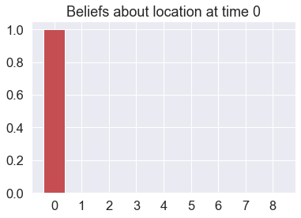
Time 1: Agent observes itself in location: (0, 1)
Time 2: Agent observes itself in location: (0, 0)
Time 3: Agent observes itself in location: (0, 0)
Time 4: Agent observes itself in location: (0, 0)
Because the expected free energy of each action is only evaluated for one timestep in the future, the agent has no way of knowing which action to initially take, to get closer to its final “goal” of (2,2). This is because the expected divergence term for all actions $\operatorname{D}_{KL}(Q(o|u) \parallel \mathbf{C})$ is identical for all considered actions (which are just 1-step moves away from starting from (0,0) ). This speaks to the importance of planning, or multiple timestep policies.
Now let’s do active inference with multi-step policies
We can rely on a useful function from pymdp’s control module called construct_policies() to automatically generate a list of all the policies we want to entertain, for a given number of control states (actions) and a desired temporal horizon.
from pymdp.control import construct_policies
policy_len = 4
n_actions = len(actions)
# we have to wrap `n_states` and `n_actions` in a list for reasons that will become clear in Part II
all_policies = construct_policies([n_states], [n_actions], policy_len = policy_len)
print(f'Total number of policies for {n_actions} possible actions and a planning horizon of {policy_len}: {len(all_policies)}')
Total number of policies for 5 possible actions and a planning horizon of 4: 625
Let’s re-write our expected free energy function, but now we loop over policies (sequences of actions), rather than actions (1-step policies)
def calculate_G_policies(A, B, C, qs_current, policies):
G = np.zeros(len(policies)) # initialize the vector of expected free energies, one per policy
H_A = entropy(A) # can calculate the entropy of the A matrix beforehand, since it'll be the same for all policies
qs_pi_t = None
for policy_id, policy in enumerate(policies): # loop over policies - policy_id will be the linear index of the policy (0, 1, 2, ...) and `policy` will be a column vector where `policy[t,0]` indexes the action entailed by that policy at time `t`
t_horizon = policy.shape[0] # temporal depth of the policy
G_pi = 0.0 # initialize expected free energy for this policy
for t in range(t_horizon): # loop over temporal depth of the policy
action = policy[t,0] # action entailed by this particular policy, at time `t`
# get the past predictive posterior - which is either your current posterior at the current time (not the policy time) or the predictive posterior entailed by this policy, one timstep ago (in policy time)
if t == 0:
qs_prev = qs_current
else:
qs_prev = qs_pi_t
qs_pi_t = get_expected_states(B, qs_prev, action) # expected states, under the action entailed by the policy at this particular time
qo_pi_t = get_expected_observations(A, qs_pi_t) # expected observations, under the action entailed by the policy at this particular time
kld = kl_divergence(qo_pi_t, C) # Kullback-Leibler divergence between expected observations and the prior preferences C
G_pi_t = H_A.dot(qs_pi_t) + kld # predicted uncertainty + predicted divergence, for this policy & timepoint
G_pi += G_pi_t # accumulate the expected free energy for each timepoint into the overall EFE for the policy
G[policy_id] += G_pi
return G
Let’s write a function for computing the action posterior, given the posterior probability of each policy:
def compute_prob_actions(actions, policies, Q_pi):
P_u = np.zeros(len(actions)) # initialize the vector of probabilities of each action
for policy_id, policy in enumerate(policies):
P_u[int(policy[0,0])] += Q_pi[policy_id] # get the marginal probability for the given action, entailed by this policy at the first timestep
P_u = utils.norm_dist(P_u) # normalize the action probabilities
return P_u
Now we can write a new active inference function, that uses temporally-deep planning
def active_inference_with_planning(A, B, C, D, n_actions, env, policy_len = 2, T = 5):
""" Initialize prior, first observation, and policies """
prior = D # initial prior should be the D vector
obs = env.reset() # get the initial observation
policies = construct_policies([n_states], [n_actions], policy_len = policy_len)
for t in range(T):
print(f'Time {t}: Agent observes itself in location: {obs}')
# convert the observation into the agent's observational state space (in terms of 0 through 8)
obs_idx = grid_locations.index(obs)
# perform inference over hidden states
qs_current = infer_states(obs_idx, A, prior)
plot_beliefs(qs_current, title_str = f"Beliefs about location at time {t}")
# calculate expected free energy of actions
G = calculate_G_policies(A, B, C, qs_current, policies)
# to get action posterior, we marginalize P(u|pi) with the probabilities of each policy Q(pi), given by \sigma(-G)
Q_pi = softmax(-G)
# compute the probability of each action
P_u = compute_prob_actions(actions, policies, Q_pi)
# sample action from probability distribution over actions
chosen_action = utils.sample(P_u)
# compute prior for next timestep of inference
prior = B[:,:,chosen_action].dot(qs_current)
# step the generative process and get new observation
action_label = actions[chosen_action]
obs = env.step(action_label)
return qs_current
Now run it to see if the agent is able to navigate to location (2,2)
D = utils.onehot(grid_locations.index((0,0)), n_states) # let's have the agent believe it starts in location (0,0) (upper left corner)
env = GridWorldEnv(starting_state = (0,0))
qs_final = active_inference_with_planning(A, B, C, D, n_actions, env, policy_len = 3, T = 10)
Starting state is (0, 0)
Re-initialized location to (0, 0)
..and sampled observation (0, 0)
Time 0: Agent observes itself in location: (0, 0)
Time 1: Agent observes itself in location: (0, 0)
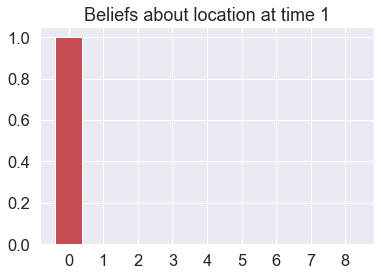
Time 2: Agent observes itself in location: (0, 0)
Time 3: Agent observes itself in location: (0, 1)
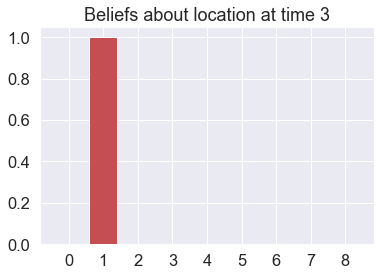
Time 4: Agent observes itself in location: (0, 2)
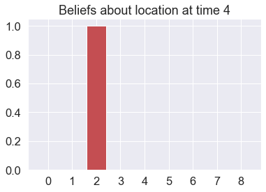
Time 5: Agent observes itself in location: (1, 2)
Time 6: Agent observes itself in location: (2, 2)
Time 7: Agent observes itself in location: (2, 2)
Time 8: Agent observes itself in location: (2, 2)
Time 9: Agent observes itself in location: (2, 2)
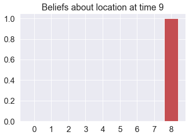